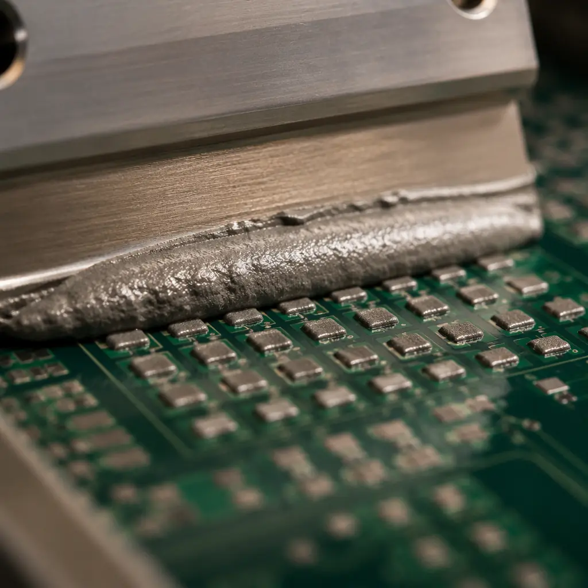

Solder paste printing accounts for 60–70% of all SMT assembly defects, and the stencil is the root cause in the overwhelming majority of those cases. Yet stencil design is often treated as an afterthought — a default 0.1mm laser-cut stainless steel foil ordered from the lowest bidder. The difference between a properly engineered stencil and a generic one can be 3–8% first-pass yield on fine-pitch assemblies — translating to tens of thousands of dollars in rework costs per production run. This guide covers the four stencil design decisions that directly control your solder paste transfer efficiency: aperture geometry, foil thickness, step stencil strategy, and surface coating.
At Huaxing PCBA, our 8 SMT lines run stencils from multiple qualified suppliers, with in-house SPI (solder paste inspection) providing closed-loop feedback on every stencil's real-world performance. We've correlated stencil design parameters to actual defect rates across component pitches from 0.3mm BGA to 2512 passives. Here's what the data shows.

The Area Ratio Rule — The Physics That Governs Paste Release
Every stencil aperture decision traces back to one equation: the area ratio. This is the ratio of the aperture's open area (where paste exits) to its wall area (where paste sticks). It determines whether solder paste releases cleanly from the aperture or leaves residue that builds up into bridging defects.
Area Ratio Formula and Thresholds
For a rectangular aperture: Area Ratio = (L × W) / [2 × T × (L + W)], where L and W are aperture dimensions and T is foil thickness. The industry-standard minimum is 0.66 for electroformed stencils and 0.75 for laser-cut stainless steel. Below 0.66, paste release becomes unreliable regardless of printing parameters. For 0201 passive components (0.25mm × 0.125mm pads) on a standard 0.1mm foil: AR = (0.25×0.125) / [2×0.1×(0.25+0.125)] = 0.031 / 0.075 = 0.42 — well below threshold. This is why 0201 designs require thinner foil or modified aperture shapes. See our PCB assembly process guide for the complete SMT workflow.
What Happens When Area Ratio Fails
Below the threshold ratio, solder paste adheres to the aperture walls instead of the PCB pad. The result: inconsistent paste volume, insufficient solder on fine-pitch leads, and opens on BGAs. SPI data from our lines shows that apertures with AR < 0.60 produce 2.3× more volume variation (CoV > 15%) compared to AR > 0.75 designs. The defect doesn't appear at every print cycle — it's stochastic, appearing on 5–15% of boards — which makes it especially dangerous because it passes AOI on some boards and fails on others. For PCB testing methods that catch these intermittent defects, our guide covers AOI, SPI, and X-ray strategies.
Aperture Shape Modifications to Improve Release
When area ratio is marginal (0.55–0.70), aperture shape modifications can rescue paste release without changing foil thickness. Common techniques: home-plate (rounded rectangular with one pointed end — reduces wall contact by 15%), radiused corners (R ≥ 0.05mm — eliminates the sharp corners where paste most readily adheres), and trapezoidal wall angles (wider at squeegee side, narrower at board side — electroformed stencils achieve this natively, laser-cut requires post-processing). For our BGA assembly guide, we specify home-plate apertures for 0.4mm pitch BGAs on 0.1mm foil to maintain transfer efficiency above 85%.
Key Insight: You cannot fix a bad area ratio with better printing parameters. Squeegee pressure, speed, and separation speed help — but if the AR is below 0.55, no amount of printer tuning will deliver consistent paste volume. The fix is thinner foil, step stencil, or electroformed technology.
Stencil Thickness Selection — The Tradeoff Every Design Faces
Thicker foil deposits more paste volume, which is good for large components that need robust solder joints. But thicker foil also reduces the area ratio for fine-pitch apertures. Every PCB design with mixed component sizes forces a thickness compromise.
| Foil Thickness | Smallest Reliable Pitch | Typical Paste Volume | Best For |
|---|---|---|---|
| 0.08mm (3.2 mil) | 0.3mm BGA / 0201 | Low (60–80% pad coverage) | Mobile, wearables, high-density |
| 0.10mm (4 mil) | 0.4mm BGA / 0402 | Standard (80–100%) | General-purpose, mixed-pitch |
| 0.12mm (5 mil) | 0.5mm QFP / 0603 | Moderate (100–120%) | Automotive, industrial controls |
| 0.15mm (6 mil) | 0.8mm QFP / 0805 | High (120–150%) | Power electronics, connectors |
| 0.20mm (8 mil) | 1.27mm SOIC / 1206 | Very High (150–200%) | Heavy copper, through-hole fill |
The conflict arises when one board has both a 0.4mm BGA (requiring ≤0.10mm foil) and large QFN thermal pads (wanting ≥0.12mm for adequate paste). This is where step stencils enter the picture. For mixed-signal PCB designs that combine fine-pitch ADCs with large power MOSFETs, this thickness conflict is routine.
Procurement Tip: Always include your smallest component pitch and largest pad size in the stencil RFQ. The stencil supplier needs both to determine whether a single-thickness foil can work or a step stencil is required. Omitting either leads to a stencil that fails on one end of your component spectrum.
Step Stencils — When One Thickness Isn't Enough
A step stencil has two (rarely three) foil thicknesses on the same frame. The thinner area covers fine-pitch components; the thicker area deposits more paste on large pads. Step stencils add $80–$150 to stencil cost but can be the difference between viable and unmanufacturable for mixed-technology boards.
Step-Down Design (Most Common)
The fine-pitch area is etched or coined to be thinner than the base foil. Example: base foil 0.12mm, step-down area 0.10mm for the 0.4mm BGA region. The step transition zone should be at least 2–3mm wide and positioned away from component pads — squeegee blades catch on abrupt thickness transitions, causing pressure fluctuations that affect paste volume. Our PCB stackup design guide discusses how component placement affects stencil step placement.
Step-Up Design (Less Common)
The thick-paste area is built up, typically by electroplating additional metal onto the base foil in specific regions. Used when the majority of the board is fine-pitch (0.10mm base) but a few large components need extra paste. Step-up adds $150–$250 to stencil cost and is not supported by all stencil suppliers. Verify capability before designing for step-up.
Step Stencil Print Validation
Step stencils require a dedicated SPI program that applies different volume limits to different board regions. A single global SPI limit will flag the thin region (under-volume) or thick region (over-volume) as defects. Our NPI process includes 20–30 print cycles of SPI data collection with the step stencil before releasing it to production. For PCB design for testability considerations, step stencils add validation complexity that should be accounted for in your test plan.
Nano-Coating — The ROI Case for Surface Treatment
Nano-coating applies a 50–100nm fluoropolymer layer to the stencil surface and aperture walls. The coating reduces the surface energy of the stainless steel, making it harder for solder paste to adhere. The claimed benefits: less underside wiping, longer stencil life, better fine-pitch release. But at $60–$120 adder per stencil, is it worth it?
When Nano-Coating Pays for Itself — Fine-Pitch and Long Runs
For assemblies with 0.4mm pitch or finer components, nano-coating reduces the underside wipe frequency from every 5–8 prints to every 15–25 prints. On a line running 200 boards/day, that saves 30–40 minutes of line downtime per shift. For production runs above 5,000 boards per stencil, the labor savings alone exceed the coating cost. Nano-coating also extends stencil life from ~25,000 to ~50,000 prints by reducing the abrasive effect of solder paste on aperture edges. Read our PCB cost factors guide for the full manufacturing economics.
When to Skip Nano-Coating
For prototype runs (< 200 boards), boards with only 0603-and-larger passives, or pure through-hole wave-soldered assemblies, nano-coating provides no measurable ROI. The stencil will be retired long before the coating's benefits materialize. Similarly, if your paste chemistry is aggressive (high-activity flux, halogenated), the coating degrades faster — typically 40–60% of its rated life. Check paste-coating compatibility with your stencil supplier.
Stencil Material and Manufacturing Method Comparison
| Method | Min. Aperture | Wall Quality | Cost (400×500mm) | Best Use Case |
|---|---|---|---|---|
| Laser-Cut SS | 0.10mm | Moderate (rough walls) | $80–150 | General production, ≥0.5mm pitch |
| Laser-Cut + Electropolish | 0.08mm | Good (smooth walls) | $120–200 | Fine-pitch, improved paste release |
| Electroformed Nickel | 0.05mm | Excellent (tapered walls) | $250–450 | 0.3mm BGA, 0201, micro-BGA |
| Chemical Etch | 0.15mm | Poor (undercut) | $40–80 | Prototypes, non-critical designs |
For 95% of production assemblies, laser-cut stainless steel with electropolishing is the sweet spot — good release characteristics at a reasonable cost. Electroformed nickel stencils are reserved for designs with 0.3mm pitch BGAs or 0201 passives where area ratio demands the tapered wall geometry. Our HDI PCB technology guide discusses when microvia and fine-pitch requirements push you into electroformed stencil territory.
Stencil Tension and Frame Selection
A stencil that loses tension during printing causes aperture misalignment. The industry standard is 35–48 N/cm² of tension, measured at the center of the foil after mounting. Tension below 30 N/cm² causes the stencil to lift unevenly during the snap-off phase of printing, leaving paste smeared across pads. Our incoming stencil inspection includes tension measurement at five points — center and four corners. Stencils that fail the tension spec are returned to the supplier before they reach the SMT line. For PCB supplier audit best practices, stencil quality checks should be part of your factory evaluation checklist.
Stencil Design Checklist for Your Next RFQ
Specify Your Smallest Pitch and Largest Pad
Include both in the RFQ so the stencil supplier can validate area ratio across your entire component spectrum. Example: "Smallest: 0.4mm BGA (0.25mm pad), Largest: TO-263 thermal pad (9.5×8.2mm)." This single data point determines whether single-thickness foil works.
Define Aperture Reduction for Critical Components
For BGAs and QFNs, apertures are typically reduced to 85–95% of pad size to prevent solder bridging. For chip components (0402, 0603), apertures are often oversized to 105–110% for adequate fillet formation. Specify these reductions per component type in your stencil notes — don't assume the supplier knows your solder joint requirements.
Request Fiducial Marks on the Stencil
Stencil fiducials (separate from PCB fiducials) enable the printer to align the stencil to the board independently. Without them, alignment relies solely on board fiducials, which may be obscured by the stencil frame. Add 2–3 stencil fiducials at frame corners — this costs $0 but eliminates an entire class of alignment errors. See our Gerber files preparation guide for fiducial placement rules.
Include a Stencil Life Specification
Define the expected number of print cycles before stencil retirement. Laser-cut stainless steel with electropolishing typically lasts 25,000–50,000 prints with proper cleaning. Nano-coated stencils extend to 50,000–100,000 prints. For high-volume automotive or consumer electronics programs, stencil replacement intervals should be built into the production schedule. Learn about volume planning in our prototype vs production guide.
Summary: The Stencil Is a Precision Tool, Not a Commodity
The $80–$200 you spend on a properly designed stencil is the highest-ROI investment in your SMT assembly process. An engineered stencil — with validated area ratios, the right thickness for your component mix, nano-coating when justified by volume, and proper tension — directly eliminates 50–70% of the printing defects that downstream AOI and rework stations would otherwise catch. The alternative — a generic 0.1mm foil ordered on price alone — guarantees a higher rework rate, lower first-pass yield, and longer NPI debug cycles.
At Huaxing PCBA, every stencil that enters our SMT lines is validated against the specific component mix of the PCB it will print. Our engineering team reviews aperture designs against SPI data from similar assemblies to predict transfer efficiency before the stencil is cut. Learn how to compare PCB quotes that include proper stencil tooling, or contact us with your Gerber files for a stencil design review and assembly quote within 24 hours.